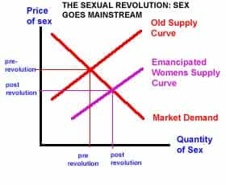

Emmanuel is a pompous git who enjoys the company of girly mistresses, spirited men, endless buffets and luxurious clothes. He can be found on Twitter at @Goldsteineum.


The sexual revolution happened because the pill appeared, many contend. Women on the pill no longer had to worry about getting pregnant, single middle class women increasingly had the ability to work and live on their own (away from the scrutiny of their families), and they could now put off getting married to focus on their career. But recently, a researcher has fingered another factor in the onset of the ‘sexual revolution’ – the end of syphilis. Historically, syphilis was a debilitating disease that would deform the faces of victims, and often kill them. It ravaged much of Europe in the 18th and 19th centuries.
A Rembrandt portrait of a man with syphilis
In 1943, it was discovered that penicillin is an effective treatment for syphilis. In the 1940’s and 50’s, syphilis-related deaths declined dramatically. Andrew Francis of Emory University has studied this period, noting that promiscuity increased at the same time; he goes on to conclude that because syphilis ceased to be a fatal threat, people went on to have sex with more people and with greater abandon. His study abstract states:
Measures of risky non-traditional sexual behavior began to rise during this period. These trends appeared to coincide with the collapse of the syphilis epidemic. Syphilis incidence reached an all-time low in 1957 and syphilis deaths fell rapidly during the 1940s and early 1950s. Regression analysis demonstrated that most measures of sexual behavior significantly increased immediately following the collapse of syphilis and most measures were significantly associated with the syphilis death rate. Together, the findings supported the notion that the discovery of penicillin decreased the cost of syphilis and thereby played an important role in shaping modern sexuality.
The case of penicillin is an interesting, cautionary tale. A cure for a debilitating disease would seem like the perfect example of something with no downsides; how could a cure ever be a bad thing? But if Francis is right, even a welcome cure has its consequences, an impact to which many would object.
Dr. Tariq Sadiq is a UK researcher developing a device as consequential as the condom and the pill — a way to test for venereal diseases quickly, conveniently and cheaply. The device would be a chip that connects to a smartphone; the user would deposit urine or saliva on the chip, and would receive an immediate response as to whether he or she had common sexually transmitted diseases, like gonorrhea or chlamydia. Sadiq is not alone; Another researcher at Columbia University, Samuel Sia, is developing a similar device, planned for use in African clinics and eventually rich countries. Tests that used to require a full laboratory to conduct can now be done with a small handheld or desktop device, with little to no human labor required.
STD infection rates have been climbing in the UK, where Sadiq lives. In the US, chlamydia has become more prevalent, but the rate for other STDs seems to have leveled off. Regardless of the trends, the threat of contracting an STD continues to put a damper on the prospect of having sex with lots of people. Some of this is unfounded, as AIDS and syphilis to a lesser extent are far more common among men who have sex with men than among heterosexuals, but STD testing is often expensive and inconvenient. It can cost hundreds of dollars even if you have health insurance, and few get it more than once or twice a year, despite having multiple new sexual partners every year. In addition, it may take weeks to get an appointment, and yet more weeks to get your results, at which point you’ll probably lose the paper it’s written on. All you’ll have left is a weak assurance to give your partner that “I’m clean.” Of course, the less scrupulous are content baldly lying about their STD test record.
With such testing devices, one would get results quickly and digitally. The results would be transmitted to an app on your phone, then you’d run the app and show your results to prospective sexual partners. Even if a test result were two weeks old, if the user has been having sex for eight years, over 99% of their sexual history is accounted for; unless they had some wild sex spree since then, the odds that the person has contracted an STD in the intervening two weeks are low. The test would be cheap, at $5 or less per use. Once people become comfortable sharing their data in this way, it might even start to appear in on online dating profiles. It’s hard to see how this wouldn’t catch on, in one form or another, given the obvious benefits.
The question posed above is a favorite of mine. If the case of penicillin and syphilis is any guide, electronic STD testing may usher in a new era of promiscuity. The responses above, as a statistical representation of how people would respond, is probably meaningless.
But even if you had a well crafted survey, whose sample reflected the population, the results would be near worthless. If you had asked girls in the 1950’s if they would be having one night stands given that syphilis was no longer a threat, they wouldn’t have said, ‘Well yes, raw dogging is no longer a problem! Waiting ’til marriage is a sucker’s game now, obvi!’ They’d have shuddered with disgust. They wouldn’t have foreseen that pre-marital, no strings attached sex would become the norm, just because of some medical innovations.
Recently, I spoke to a couple girls in their early 20’s, girls who were relatively chaste – they’d usually only have sex with men with they’ve dated for some time. The topic of STDs came up, and both of them were quick to conclude that they’d have sex with strangers more often and more quickly if they had better assurance that the man in question was free of STDs. To be honest, I was a little surprised by how forthright they were, and that they weren’t more critical of slutty behavior, given their own conduct.

Graphic Credit: The Sexonomist
With the diminished threat of contracting STDs, more and more women will have sex with less prior commitment. Even women who answered no to the question above, claiming that concerns about STDs will not change the number of men they sleep with, will become sluttier.
Imagine a girl named Becky, a six out of 10 on the looks scale. As Becky holds out for increasingly little commitment from a man before agreeing to have sex with him, the pool of men willing to try and bang her increases. Where before, when Becky waited until the engagement or the wedding to have sex, no man higher than a 6 on the status scale would have sex with her. Currently, Becky waits until the third date or fourth date to have sex, but men 8 or above on the status scale can’t be bothered to stick around that long, for the most part. With the threat of STDs a thing of the past, Becky will start having one night stands regularly, and may even approach men outright with coy offers of quick sex. Even a high status man is happy to sleep with a plain woman like Becky, as long as she lets it happen quickly and easily.
Of course, this transition has already been happening for several decades; eliminating the threat of STDs will just hasten it. Some women are already having sex with strangers they just met, and more will join them in the ensuing years. More women will spend more time single, and less time in committed, exclusive relationships. As they choose to have more sex with less prior commitment, they will get more attention from high value men, men who would have ignored them when they were slower to have sex.
The plain men who would commit to these women will stop being appealing after all those romps with handsome and charming men. When and if these women do get married, they’ll secretly hold their husbands in contempt, as pathetic lame creatures who have quietly robbed them of their independence. After all, these husbands have no hope of measuring up to the men of her youth. She will have infrequent sex with him and her libido will disappear. Health ‘experts,’ inevitably, will consign this to aging and a lack of ‘communication,’ and we’ll forget what it’s like to meet a girl who doesn’t have a permanent seat on the cock carousel.
Read Next: All Girls Like Muscular Guys
{kind=link}